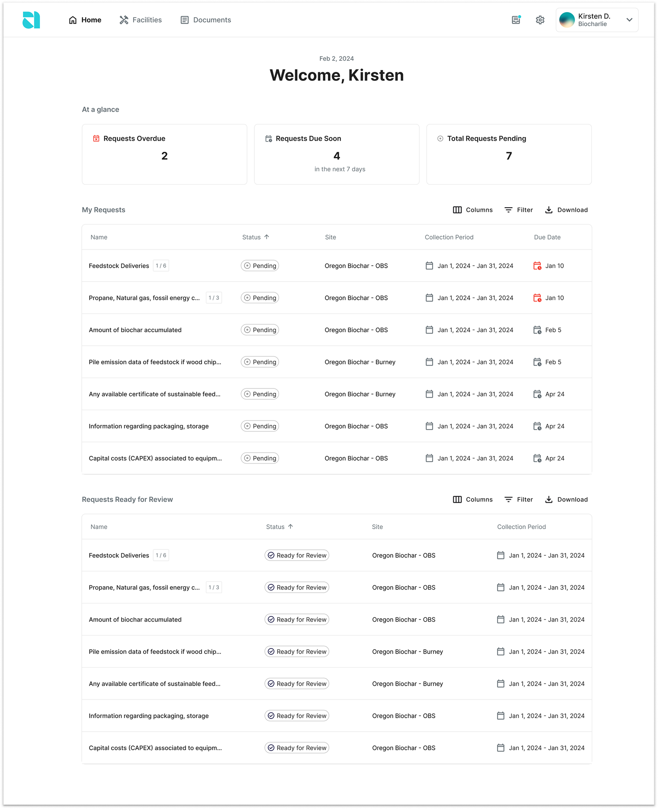
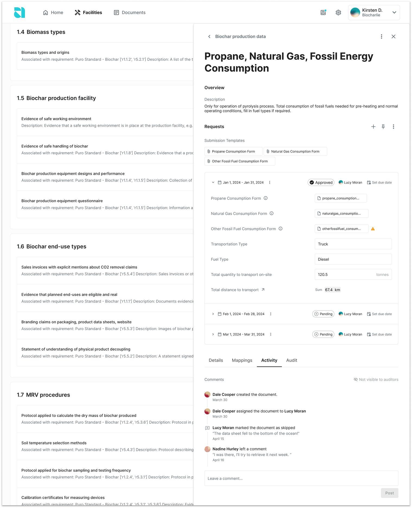
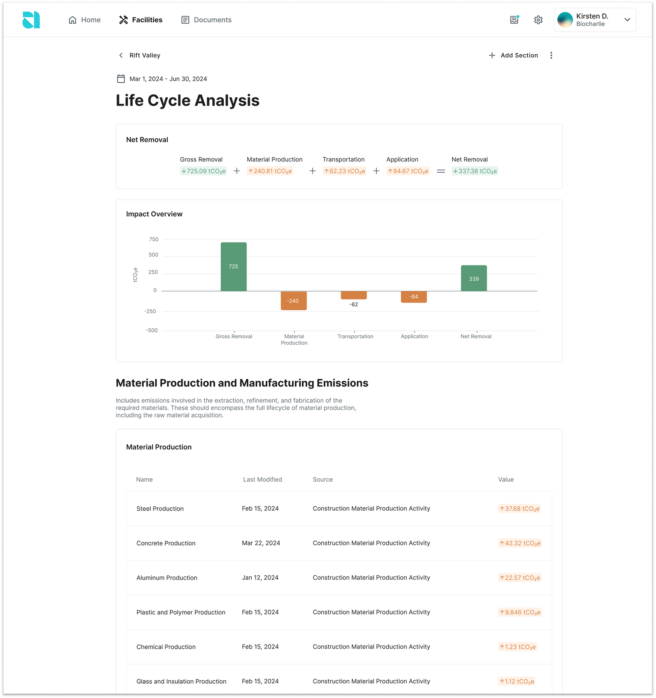
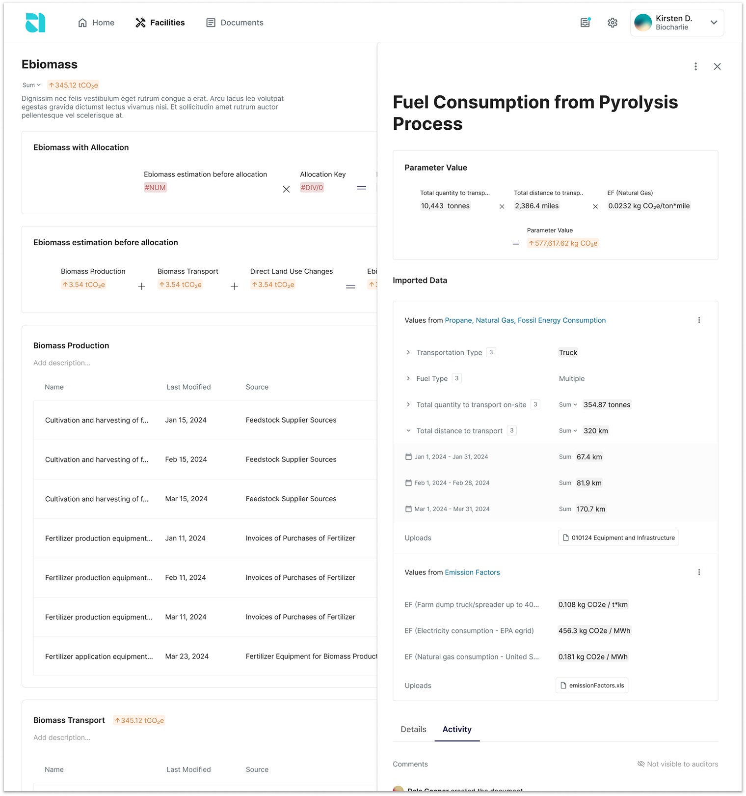
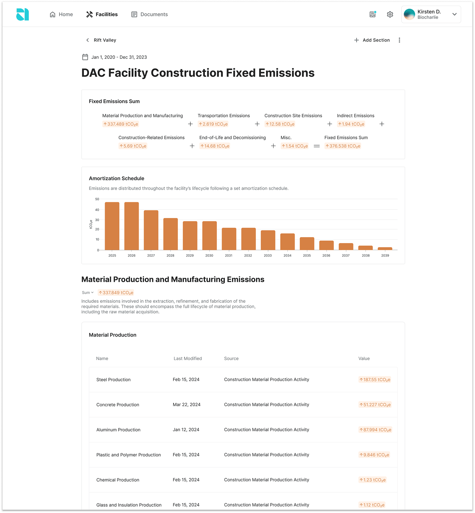
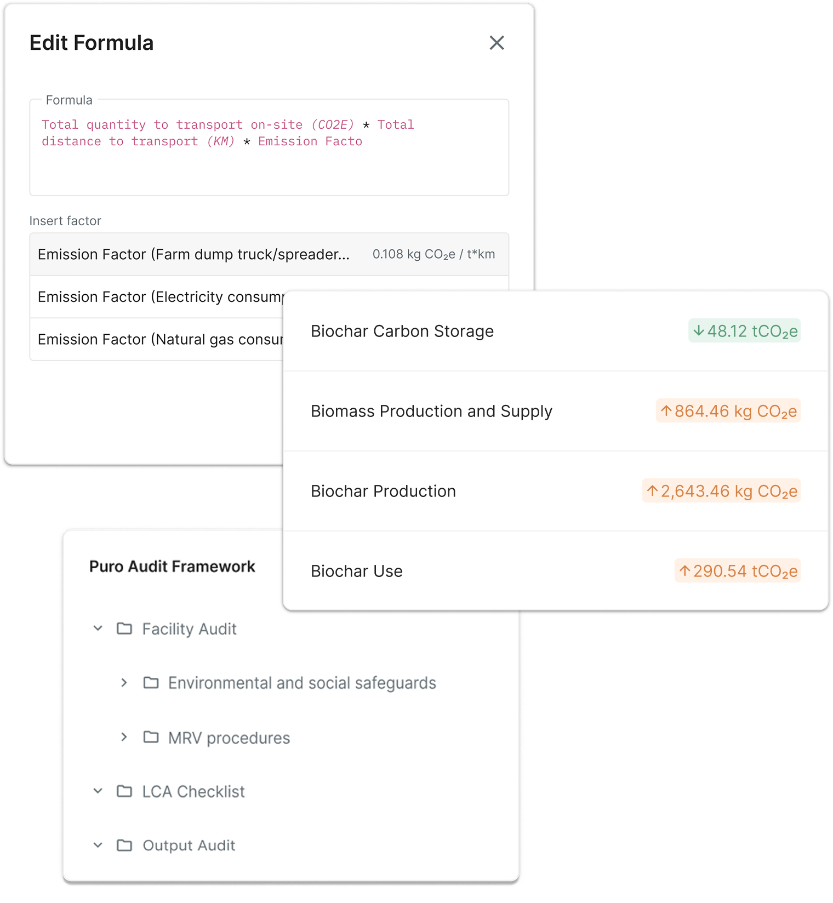
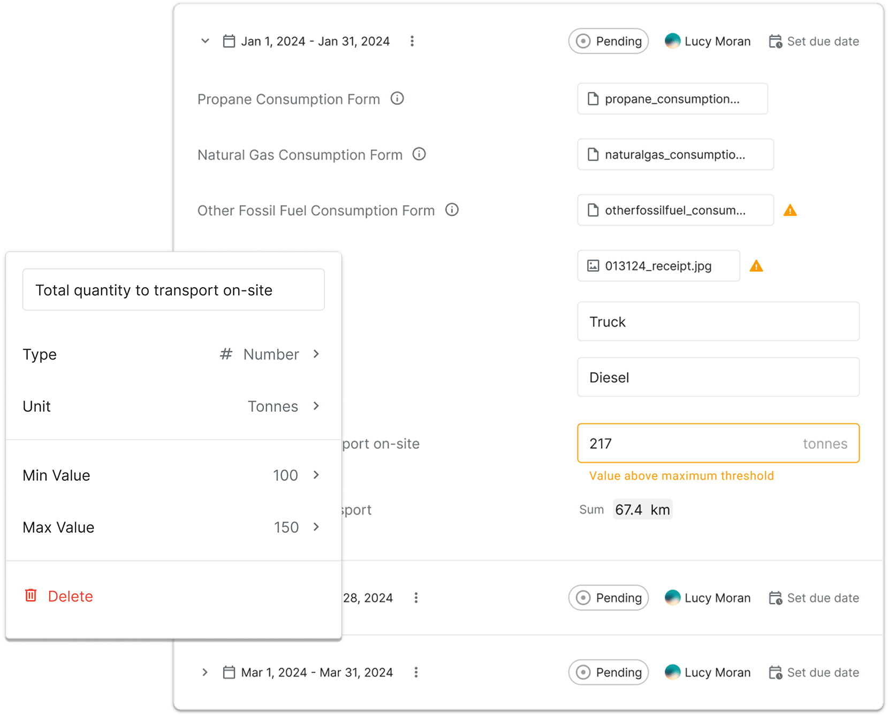
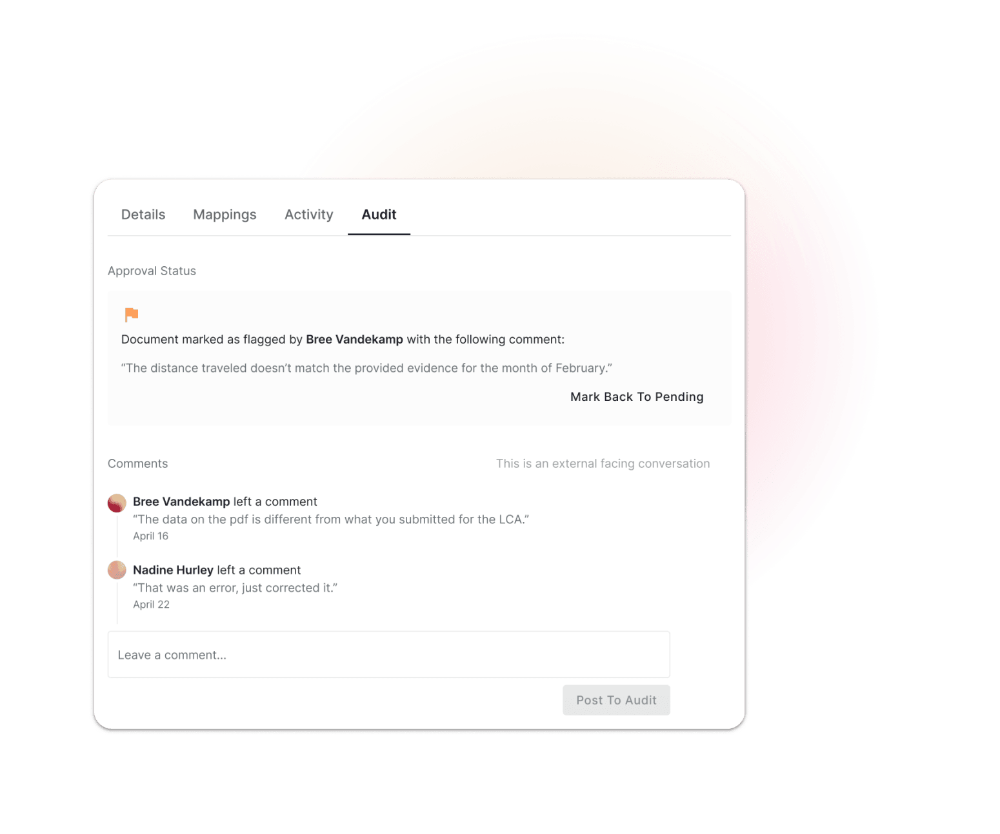

Alcove
Carbon Compliance Platform
Led the end-to-end design of the platform, shaping core workflows, data models, and interfaces from the ground up. We collaborated closely with carbon removal suppliers, registries, and scientists to translate complex audit and compliance requirements into a clear and flexible product experience that is now being used by the world’s most important players in the market.
The Carbon Compliance Platform helps carbon removal suppliers manage audit-ready data, calculate lifecycle emissions, and streamline compliance with carbon credit registries like Puro and Isometric. It transforms complex methodology requirements into structured tasks, supports data collection, and facilitates third-party verification—enabling credit issuance up to 10× faster and with greater reliability.
Data frameworks are structured into nested documents made up of Principles, Sections, Controls, and Documents. This structure guides suppliers through the data submission process. Within each document, users can upload or input data from a variety of sources—including files, direct values, sensor feeds, or APIs. Documents can be assigned to team members and collaboratively reviewed before submission, providing clarity and accountability throughout the data collection phase.


Each data framework connects to a Lifecycle Analysis (LCA) model that automatically aggregates emissions and removals across the carbon removal process. The platform supports both default and custom frameworks, giving users the flexibility to define variables, configure formulas, and adjust assumptions based on their project-specific methodologies. This system outputs an estimated Net Removal value, which forms the basis for carbon credit issuance upon audit approval.




To reduce human error and improve data quality, the platform includes built-in quality assurance features. Organizations can set expected ranges for input values using minimum and maximum thresholds. The system also flags outliers by comparing inputs to historical data, helping reviewers catch anomalies early and standardize the review process across large datasets.

The platform includes a dedicated audit interface for registries and third-party verifiers. Instead of relying on email threads and spreadsheets, verifiers can directly access submitted documents, approve or flag items, and collaborate with suppliers in a structured review workflow. This streamlined experience reduces audit timelines and increases transparency and trust across the verification process.
